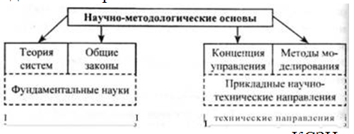
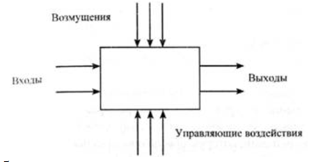

Методология комплексного подхода к защите информационных сетей
Наверх Главная цель создания СЗИ — достижение максимальной эффективности защиты за счет одновременного использования всех необходимых ресурсов, методов и средств, исключающих несанкционированный доступ к защищаемой информации и обеспечивающих физическую сохранность ее носителей.
Организация — это совокупность элементов (людей, органов, подразделений) объединенных для достижения какой-либо цели, решения какой-либо задачи на основе разделения труда, распределения обязанностей и иерархической структуры.
СЗИ относится к системам организационно-технологического (социотехнического) типа, т. к. общую организацию защиты и решение значительной части задач осуществляют люди (организационная составляющая), а защита информации осуществляется параллельно с технологическим процессами ее обработки (технологическая составляющая).
Постановка задачи защиты информации в настоящее время приобретает ряд особенностей: во-первых, ставится вопрос о комплексной защите информации; во-вторых, защита информации становится все более актуальной для массы объектов (больших и малых, государственной и негосударственной принадлежности); в-третьих, резко расширяется разнообразие подлежащей защите информации (государственная, промышленная, коммерческая, персональная и т. п.). Осуществление мероприятий по защите информации носит массовый характер, занимается этой проблемой большое количество специалистов различного профиля. Но успешное осуществление указанных мероприятий при такой их масштабности возможно только при наличии хорошего инструментария в виде методов и средств решения соответствующих задач. Разработка такого инструментария требует наличия развитых научно-методологических основ защиты информации.
Под научно-методологическими основами комплексной защиты информации (как решения любой другой проблемы) понимается совокупность принципов, подходов и методов (научно-технических направлений), необходимых и достаточных для анализа (изучения, исследования) проблемы комплексной защиты, построения оптимальных механизмов защиты и управления механизмами защиты в процессе их функционирования. Уже из приведенного определения следует, что основными компонентами научно-методологических основ являются принципы, подходы и методы. При этом под принципами понимается основное исходное положение какой-либо теории, учения, науки, мировоззрения; под подходом — совокупность приемов, способов изучения и разработки какой-либо проблемы; под методом — способ достижения какой-либо цели, решения конкретной задачи. Например, при реализации принципа разграничения доступа в качестве подхода можно выбрать моделирование, а в качестве метода реализации — построение матрицы доступа.
Общее назначение методологического базиса заключается в
— формировании обобщенного взгляда на организацию и управление КСЗИ, отражающего наиболее существенные аспекты проблемы;
— формировании полной системы принципов, следование которым обеспечивает наиболее полное решение основных задач;
— формировании совокупности методов, необходимых и достаточных для решения всей совокупности задач управления.
Предмет нашего исследования — рассмотрение различных аспектов обеспечения безопасности социотехнической системы, характерным примером которой является современный объект информатизации.
Поэтому состав научно-методологических основ можно определить следующим образом:
— так как речь идет об организации и построении КСЗИ, то общеметодологической основой будут выступать основные положения теории систем;
— так как речь идет об управлении, то в качестве научно-методической основы будут выступать общие законы кибернетики (как науки об управлении в системах любой природы);
— так как процессы управления связаны с решением большого количества разноплановых задач, то в основе Должны быть принципы и методы моделирования больших систем и процессов их функционирования.
Состав научно-методологических основ комплексной системы защиты информации представлен на рис. 2.  Рис. 2. Состав научно-методологических основ КСЗИ
2.2. Основные положения теории систем
Система — совокупность или множество связанных между собой элементов.
Под системой может пониматься естественное соединение составных частей, самостоятельно существующих в природе, а также нечто абстрактное, порожденное воображением человека. Такой подход к определению понятия системы заранее предлагает существование связей между ее элементами.
Всякая система состоит из взаимосвязанных и взаимодействующих между собой и с внешней средой частей ем в определенном смысле представляет собой замкнутое целое.
Система взаимодействует с внешней средой и может быть количественно оценена через свои входы и выходы.
Входами могут быть, в общем смысле, перерабатываемое сырье, его количество, состав, температура и т. д.; выходами могут быть количество готового продукта, его качество и т. п. (см. рис. 3).  Рис. 3. Обобщенное представление системы
Обычно система подвержена возмущениям, для их компенсации, т. е. для того, чтобы система работала в заданном направлении, используют управляющие воздействия.
Система — это достаточно сложный объект, который можно расчленить (провести декомпозицию) на составляющие элементы или подсистемы. Элементы связаны друг с другом и с окружающей средой объекта. Совокупность связей образует структуру системы. Система имеет алгоритм функционирования, направленный на достижение определенной цели.
Все системы можно условно разделить на малые и большие.
Малые системы однозначно определяются свойствами процесса и обычно ограничены одним типовым процессом, его внутренними связями, а также особенностями функционирования.
Большие системы представляют собой сложную совокупность малых (подсистем) систем и отличаются от них в количественном и качественном отношениях.
Рассмотрим составляющие системы и ее основные свойства.
Элементы — это объекты, части, компоненты системы. Причем их число ограничено.
Свойства — качества элементов, дающие возможность количественного описания системы, выражая ее в определенных величинах.
Связи — это то, что соединяет элементы и свойства системы в целое.
При анализе систем значительный интерес представляет изучение их структуры. Структура отражает наиболее существенные, устойчивые связи между элементами системы и их группами, которые обеспечивают основные свойства системы. То есть структура — это форма организации системы. Структура системы может претерпевать определенные изменения в зависимости от факторов (причин) внутренней и внешней природы, от времени.